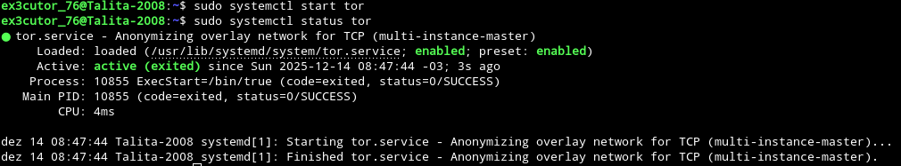

Proxy da rede tor:
Bem a explicação do que é um proxy, vai estar no tópico #Outras informações importantes#
Sabia que é possível usar a rede tor no Linux (Em alguns outros sistemas operacionais também) e aqui vai o tutorial:
Instale o tor usando o comando no terminal: sudo apt install tor
Use o comando: sudo systemctl status tor (Com esse comando você vai ver se está ativo ou não, abaixo terá uma imagem de exemplo)

E você deve estar me perguntando "Como diabos você sabe que está conectado na rede tor com esse monte de texto?"
e muito simples meu caro visitante, se você perceber abaixo do "sudo" tem um circulo e a lógica é a seguinte: Se estiver verde, tá ativo e se estiver sem nada: Não está ativo
e como pode perceber não estou ativo na rede tor.
Use esse comando para ativar a rede tor: sudo systemctl start tor
 Como pode perceber o círculo agora está verde, e então agora esou conectado na rede tor.
Comandos de configuração:
export http_proxy="socks5://127.0.0.1:9050" (Com esse comando você configura o tor para HTTP)
export https_proxy="socks5://127.0.0.1:9050" (Com esse comando você configura o tor para HTTPS)
export ftp_proxy="socks5"://127.0.0.1:9050" (Com esse comando você configura o tor para FTP)
Certo até mostrei como que se ativa o proxy da rede tor mas não ensinei a como desativar, e então aqui está:
No terminal use o comando: sudo systemctl stop tor (Com esse comando você desativa o proxy da rede tor)
Aviso: Não use tanto a rede tor para o dia-a-dia, já que o computador vai ficar lento devido a privacidade.
Bem, tem como ativar o proxy da rede tor no windows e no MacOS também, mas são de formas diferentes e até mais fáceis que o Linux
Se quiser saber o que é um Proxy entre no tópico: #Outras informações importantes#